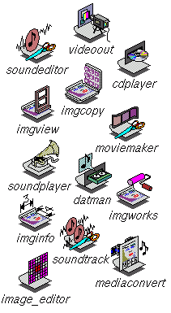
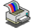
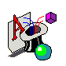

| Adobe® Acrobat Reader(TM) |
Adobe® Acrobat Reader(TM)
is your window into the world of documents digitally published in the
Adobe® Portable Document Format (PDF). With Adobe's rich set of
PDF authoring tools and PDF readers available at no cost for PC,
MAC® and UNIX® platforms, sharing information using PDF is a
welcome solution for publishing information in a heterogeneous
networked computing environment, such as the World Wide Web. PDF allows
documents to be presented in their original form, retaining the font,
color, graphic, and page layout information as the author intended. The
icon is on the Applications page of the Icon Catalog. |
 |
| Desktop MediaTools |
Capture your ideas in any medium. Desktop MediaTools give you
the option to choose the most effective way to capture and communicate
an idea. The Media Tools support creation and editing of standard file
format sounds, movies, images and 3D objects. Once you have captured
your ideas, the IRIX Interactive Desktop supports you in sharing
information with your colleagues in the most effective way. All of
these tools are on the Media Tools page of the Icon Catalog. |
 |
| ImageVision(TM) Tools |
ImageVision Tools are a set of image generation and manipulation
utilities, including:
-
Tools for viewing, altering, and enhancing images
-
A tool for converting image files to other formats
-
A tool for reading information about the image from the file
-
A tool for enumerating the supported file formats
-
A very flexible command line tool for doing batch or interactive image
processing sessions
You can find icons for these tools on the Media Tools page of the Icon
Catalog. |
| Impressario(TM) |
Impressario(TM)is an enhanced
printing and scanning environment for SGI workstations. Impressario
consists of several products:
-
Impressario(TM) Base:
File conversion tools, fonts, and other printing utilities for print
servers
-
Impressario (TM)
Developer's Kit: Tools for developing Impressario (TM) compliant printer and
scanner drivers
-
Impressario (TM)Host
RIP Printers: Drivers for selected printers that do not have built-in
PostScript (requires Impressario(TM)
PostScript Renderer)
-
Impressario (TM)
PostScript Renderer: Requires a license. Optional Adobe®
PostScript renderer
-
Impressario (TM) Print
Server: Drivers for selected printers that have built-in PostScript
(Impressario PostScript Renderer not required)
-
Impressario (TM)
Scanner Software: Drivers for HP ScanJets, Ricoh FS2, and Sharp JX
scanners
|
|
|
Impressario(TM) scanning tools allow
you to easily capture images from a scanner, file, or monitor. The
Scanner Manager tool provides a simple interface for installing and
configuring scanners. |
|
|
Impressario(TM) Printer Drivers support
the IRIX Desktop architecture, allowing you to use the IRIX Printer
Manager to configure and manage Impressario printers. Selected printers
are supported: Apple® LaserWriter, Epson Stylus, Lexmark Optra, HP
LaserJet, HP DeskJet, and HP DesignJet. The HP and Epson drivers
require the Impressario optional Adobe® Level II PostScript
interpreter. |

|
| InfoSearch |
Search all documentation formats. InfoSearch
allows users to search and browse virtually all SGI documentation from
a single Web interface: online books, help cards, man pages, and
release notes. You can launch InfoSearch from the Help menu on the
Toolchest. |
|
| Fulltext Indexing and Search Environment |
sgsearch is a fulltext indexing
toolkit. The sgsearch tools are used to build searchable fulltext
indices from HTML documents. At this time, sgsearch is relied on to
build the search indices for the InfoSearch product. It is not a
typical "end-user" product. |
| IRIS InSight(TM) |
IRIS InSight(TM)
includes Viewer, SGIHelp viewer, and the online Glossary book. IRIS
InSight(TM) Viewer lets
you easily search, browse, view, and print SGI's available online
books. Launch InSight by selecting Help > Online Books from the
Toolchest. Many desktop applications rely on this product for the
SGIHelp viewer.
The InSight(TM)
Glossary is a list of terms and definitions used in
the various InSight(TM)
manuals. The glossary can be opened, searched, and viewed like any
other InSight(TM)
document. However, it is primarily a hyperlinked resource for other
InSight manuals that do not have back-of-book glossaries. |
| IRIS InSight Developer |
The IRIS InSight(TM)
Professional Publisher (IIPP or insight_dev) package was recently
updated and moved to the Complementary Applications CD. IIPP is a
software toolkit that gives technical communicators
the ability to prepare and add online documentation and
context-sensitive help to their applications. It is the same solution
that SGI uses in-house to create and distribute its online
documentation. |
|
| NEdit |
NEdit is a standard graphical user interface (GUI)
text editor for programs and plain text files. If you've used
Macintosh® and Microsoft® Windows® based text editors,
you'll find NEdit a familiar and comfortable environment. It offers
mouse-based editing and a streamlined editing style for users of X
workstations and X terminals, and boasts many useful features such as
unlimited undo, keystroke efficiency, built-in editing functions and
the ability to use programmable macros. If you are a programmer,
NEdit's programmer-friendly features will be of help. They include
parantheses matching, auto-indent, syntax highlighting with built-in
patterns for several languages, and the ability to run NEdit in
client/server mode for integration with software development tools. |
|
| Showcase(TM) |
Deliver compelling presentations. IRIX includes Showcase,
the interactive, multimedia, presentation creation tool. Integrate
text, images, and video to create dynamic presentations. The icon is on
the Applications page of the Icon Catalog. |

|
| SGIMeeting(TM) |
Discuss interactively regardless of location. SGIMeeting is a new
standards-based data conferencing tool that interoperates with
Microsoft NetMeeting, SunForum, or any other T.120 compliant tool.
SGIMeeting's features include application sharing, including support
for OpenGL® applications, a 2D whiteboard for real-time data
saring, and annotating, file transfer, chat, a shared clipboard and
support for 24-bit color. It is available on the Applications CD and
also will be available for free as a Web download.
SGIMeeting now also includes the SGIMeeting Extensions Whiteboard
Tools. SGIMeeting Extensions offer five additional whiteboard tools as
"plug-ins" that appear on the whiteboard tool palette.
Included is:
-
A screen capture tool for dynamic or still whiteboard input
-
A video capture tool for dynamic or still whiteboard input
-
Customizable arrows and dimension markers for easy discussion pointing
-
A symbol palette for drag and drop images
-
SmartClear for clearing annotations when captured images update
|
|
| Teleffect |
Teleffect is a 3rd party product from ElectricArc. Teleffect is a desktop
service that allows multiple computers, IRIX or NT, to share a common keyboard
and mouse while having separate monitors. Users can configure the screens so
that as the mouse travels off one side of one screen it hops onto the other
screen and now controls the other system. The tool for configuring Teleffect
can be found on the Interoperability Application Catalog page.
|
|